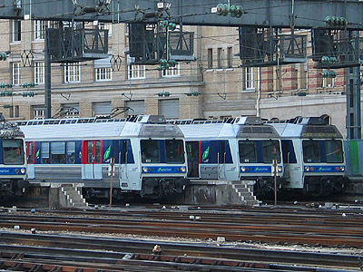
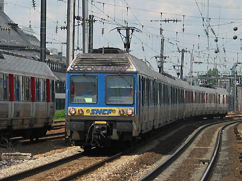
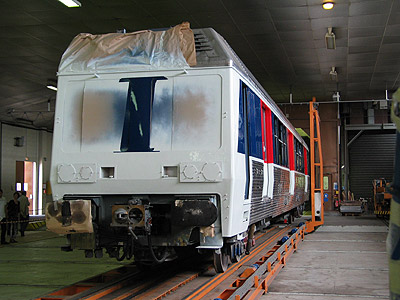
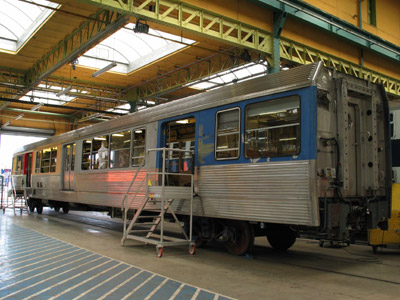
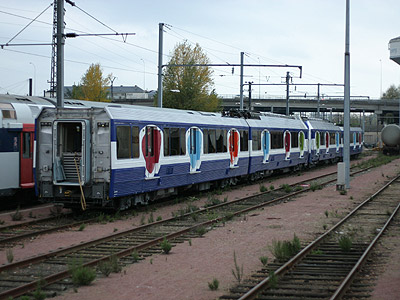

Z 6400
Les Z 6400 sont des éléments automoteurs monocourants fonctionnant sous courant alternatif 25 kV 50 Hz conçus initialement pour Roissy-Rail, le service de desserte du nouvel aéroport de Roissy, et l'équipement de la banlieue Ouest Parisienne en remplacement des rames standard alimentées par troisième rail 750V. Suite à la mise en service de l'interconnexion du RER B, Les Z 6400 ont quitté Paris-Nord pour toutes se retrouver sur les groupes II et III de Paris-St Lazare.
Les Z 6400 ont été construites à 75 exemplaires de 1976 à 1979. Leur chaudron fait massivement appel à l'acier inoxydable (le châssis est en acier Corten) comme leurs prédécesseurs Z 6100 ou 6300 mais les dimensions généreuses et l'aménagement en sièges individuels en font des automotrices résolument modernes. La composition de la rame adopte une disposition "musclée" de deux motrices à adhérence totale encadrant deux remorques. Schéma qui sera repris par les Z 8100 et les Z2N et qui permet à ces rames d'être toujours très performantes après 40 ans de carrière.
Composition des rames
La numérotation type d'un élément est ZAD 6401 - ZRB 26401 - ZRB 26402 - ZB 6402. Les automotrices sont donc numérotées Z 6401 à 6550. Dans la motrice impaire, la première plateforme est réservée en principe au fourgon et son accès est interdit aux voyageurs. La salle est aménagée en première classe avec des rangées de quatre sièges de front installés en vis à vis et munis d'accoudoirs. Le reste de la rame est agencé en seconde classe. Les sièges en texoïd sont identiques à ceux de première hormis leur couleur et sans accoudoirs. Ils sont implantés en rangées de cinq sièges de front. L'usage du fourgon devient rapidement obsolète et la 1ère classe disparaît au 1er septembre 1999 peu avant la rénovation des caisses. Les Z 6400 modernisées sont donc intégralement aménagées en 2e classe.
Chaque caisse dispose de trois doubles portes d'1,30 m de large à fermeture automatique et verrouillage pendant la marche. Les Z 6400 se démarquent ainsi des autres rames inox par la suppression des mains courantes extérieures par mesure de sécurité. La suspension secondaire pneumatique et le chauffage par air pulsé offrent un très bon confort pour l'époque. Toutefois les critères de la clientèle se sont depuis durcis et ces automotrices sont aujourd'hui critiquées pour l'absence de climatisation.
D'un point de vue technique, un élément est composé de deux demi-éléments. La motrice possède les équipements de traction et de freinage tandis que la remorque porte les batteries et le compresseur d'air. Les Z 6400 s'appuient sur des technologies bien éprouvées. Chaque motrice dispose de quatre moteurs Oerlikon EMW 510 identiques à ceux des Z 5300. La tension est réglée par un pont complet de thyristors qui permet le freinage en récupération.
Carrière
La commande initiale de 65 rames en 1973 prévoit l'équipement de la ligne nouvelle Aulnay-sous-bois / Roissy et la réélectrification des lignes Paris-St Lazare / Versailles Rive droite et St Nom la bretèche. Un avenant de 1977 ajoute 10 rames pour le prolongement Nanterre-Université / Houilles et la ligne nouvelle Achères / Cergy.
Les mises en service progressives correspondent à l'ouverture des différents tronçons : Paris-Nord / Roissy (mai 1976) pour les quinze premières rames, Paris St Lazare / St Cloud (septembre 1976), Versailles Rive-droite (septembre 1977), St Nom et Nanterre-Université (septembre 1978), Cergy (Avril 1979). La dotation de Roissy-Rail est réduite à 11 éléments en 1978, puis complètement dissoute en 1982 lorsque les MI 79 du RER B reprennent ce service. Les Z 6400 ont également assuré des demi-tours Paris/Bois-Colombes et la desserte de Poissy avant que celle-ci ne soit intégrée au RER A en 1988. A la même occasion, la desserte de Cergy par les Z 6400 est limitée aux heures de pointes. Par le suite, les affectations resteront stables durant 30 ans.
Les Z 6400 ne suivent plus un entretien jalonné par des révisions générales. Comme les BB 7200 et 22200 qui leur sont contemporaines, un entretien à l'organe est mis en place avec des échanges standards qui immobilisent moins longtemps les rames. Pour les caisses, une Opération Confort-Esthétique (OPCE) est mise en place après 20 ans de carrière. La ZAD 6435 et sa ZRB 26435 servent de prototypes pour définir les nouveaux aménagements intérieurs. Puis la ZA 6435 est repeinte extérieurement. Le fourgon disparaît mais l'aménagement de la ZA reste alors en 1ere classe. L'élément complet Z 6435/36 est terminé en juillet 1999 et la modification en série des autres éléments débute en 2000. Par rapport à l'élément de pré-série, toutes les caisses sont réaménagées en 2e classe avec quatre sièges de front et les parois intérieures sont bleues. La moustache rouge sur la ZA 6435 devient bleue et le sigle SNCF est remplacé par le nouveau label Transilien.
Pour la réouverture partielle de la ligne de grande ceinture entre St Germain-en-Laye et Noisy-le-roi (Tangentielle Ouest), les trois éléments Z 6479/80, Z 6481/82 et Z 6483/84 sont modernisés en 2004 suivant un programme bien distinct de la série. L'intérieur est fondammentalement revu avec des équipements innovants : fauteuils tournés vers les baies, larges zones pour passagers debouts avec strapontins, intercirculation étanche, accès pour fauteuils roulants. La livrée extérieure abandonne le bleu-blanc-rouge Ile de France et reprend les coloris appliqués lors de la rénovation du parc Transilien.
La rame Z 6483/84 (une des trois rames transformées Grande ceinture) a été radiée suite à un incendie en décembre 2011.
L'amortissement de la série a débuté fin 2016. Après avoir chassé les RIB, les commandes complémentaires de Z 50000 visent désormais à remplacer les Z 6400 qui devraient cesser tout service d'ici 2020-21.
Livrées
Les Z 6400 possédaient une livrée qui leur était propre. L'inox nu était réhaussé d'un bandeau bleu au niveau des baies. A l'avant, une moustaches jaune portait le sigle SNCF de type 'UIC'.
Lors de leur rénovation caisse au début des années 2000, les Z 6400 ont reçu une livrée à mi-chemin entre la livrée Ile-de-France équipant les RER et trains de banlieue SNCF et la livrée Transilien des Z 22500, avec la moustache peinte en bleu clair.
Trois rames modifiées pour la remise en service de la Grande Ceinture Ouest adoptent la nouvelle livrée Transilien bleue à berlingots de couleurs. La Z 6483/84 est radiée suite à incendie.
Quelques données techniques
Constructeurs : Carel et Fouché Languepin, Alsthom, De Dietrich - Traction CEM Oerlikon
Tension d'alimentation : 25 kV monophasé 50 Hz
Chaîne de traction : Transformateur et pont complet de thyristors
Motorisation : 2 x EMW 510 dans chaque bogie moteur.
Transmission : cardan et arbre creux.
Puissance nominale : 2360 kW
Vitesse max : 120 km/h
Pour plus d'info :
- Bibliographie
Rail Magazine n°25 (mai 1979)
Voies ferrées n°133 (septembre-octobre 2002)
- Ailleurs sur le Web
La fiche Z 6400 sur Wikipedia
Fiche technique des Z 6400 de Florent Brisou
Le dossier Z 6400 sur Metropole.net (Archive)
L'inventaire des Z 6400 sur Trains du Sud-Ouest
Dossier Z 6400 sur le blog Transportparis

La Z 6537 à Bécon les Bruyères (14/10/2003)

La Z 6505 à emmarchement haut, à Clichy-Levallois (02/07/2003)

La Z 6405 IDF-Transilien à Bécon (30/05/2003)

Paris St Lazare en heure de pointe. La livrée d'origine se fait rare (17/04/2003)

La Z 6481 sur la Tangentielle Ouest (23/01/2005)

Mélange de Z 6400 rénovées et d'origine (Clichy-Levallois, 15/05/2003)

Cette Z 6400 sort du tunnel de peinture de St Pierre des Corps (14/06/2003)

ZR 26400 en cours de rénovation à St Pierre des Corps (14/06/2003)

La Z 6481-82 Transilien prête à être expédiée de St Pierre des Corps (11/11/2004)